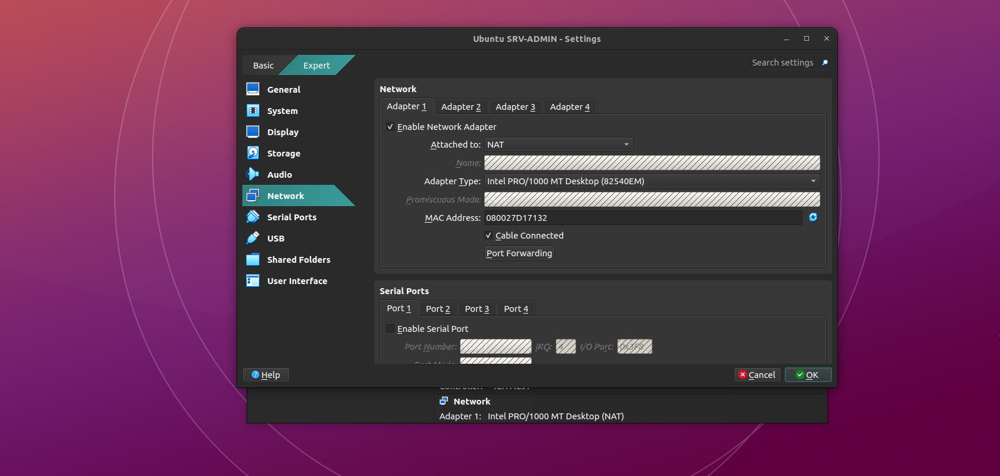
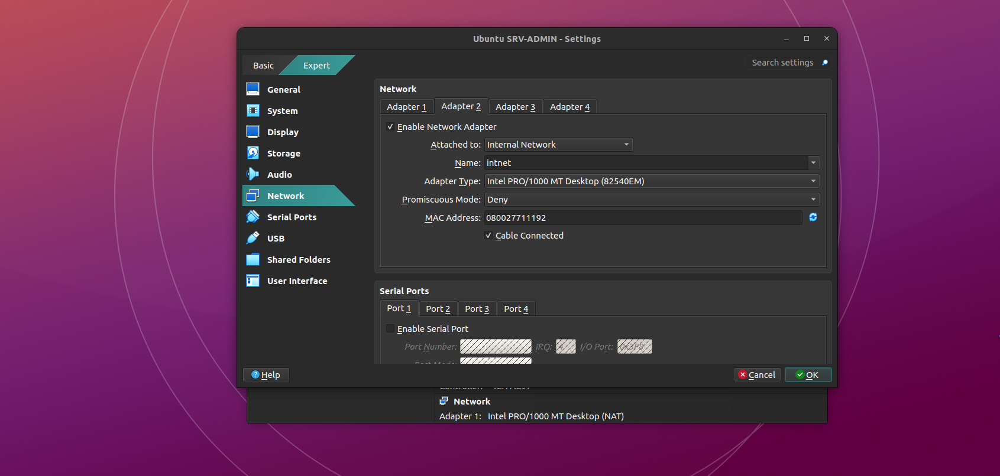
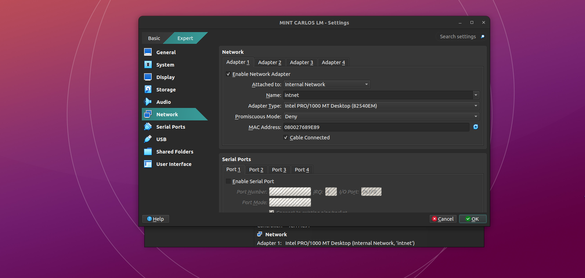

A.1. Configuración de Red en VirtualBox
Para garantizar el aislamiento y la conectividad a Internet de nuestro servidor, necesitamos configurarle dos interfaces de red físicas virtuales. El cliente, por otro lado, solo debe tener acceso a la red interna corporativa.


